NT News
Australia
Curbing cracker night chaos: Councils debate Territory Day red tape
The word chaos gives it open-mic energy.
The latest daily picks, linked back to the original sources. Search the room, pick a source, or follow a headline out to the full story.
Record updated: 12 Nov 2026, 12:23 PM AEST
Showing 22 headline candidates from the refresh run completed on 12 Nov 2026, 12:23 PM AEST.
The word chaos gives it open-mic energy.

The scale is doing deadpan comedy.
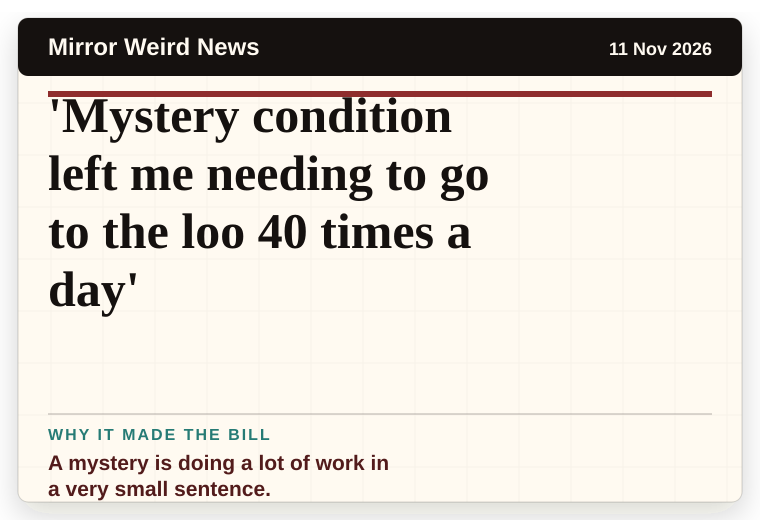
A mystery is doing a lot of work in a very small sentence.

A wonderfully specific detail has taken centre stage.

The headline is already trying not to laugh.
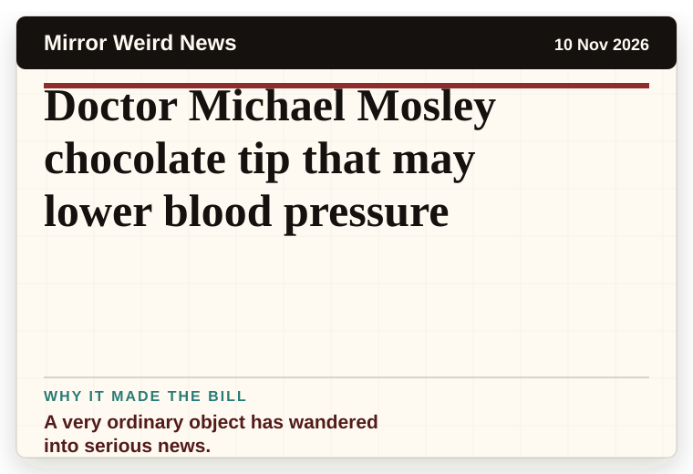
A very ordinary object has wandered into serious news.

The word chaos gives it open-mic energy.

It has the shape of a tiny adventure reported with a straight face.

The object list sounds like someone shuffled three different stories together.

A wonderfully specific detail has taken centre stage.

A wonderfully specific detail has taken centre stage.

A mystery is doing a lot of work in a very small sentence.

The headline is already trying not to laugh.
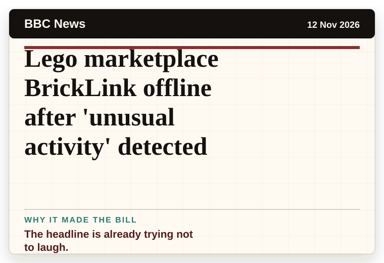
The headline is already trying not to laugh.
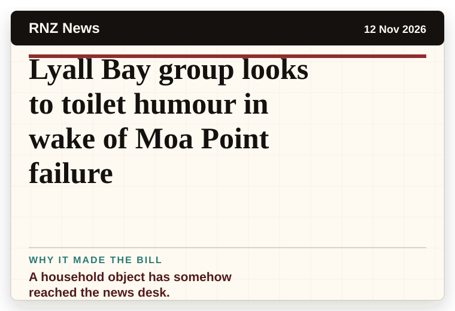
A household object has somehow reached the news desk.
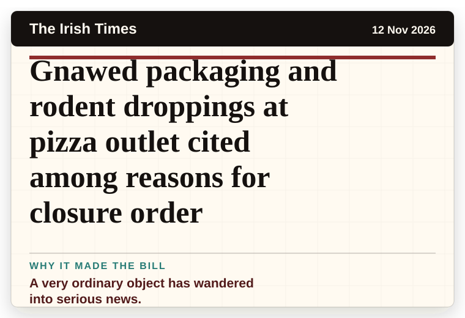
A very ordinary object has wandered into serious news.
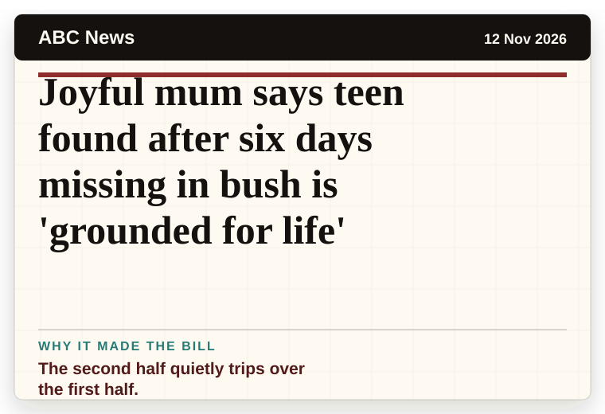
The second half quietly trips over the first half.
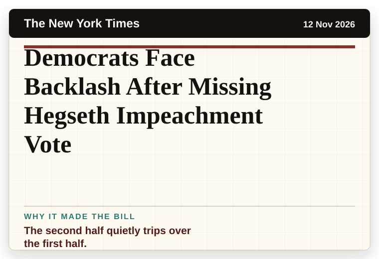
The second half quietly trips over the first half.
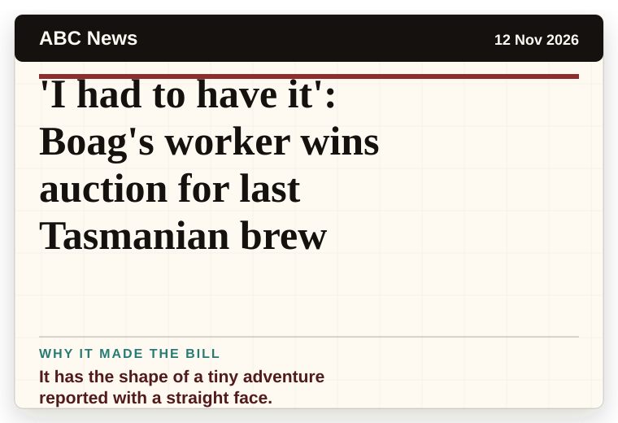
It has the shape of a tiny adventure reported with a straight face.
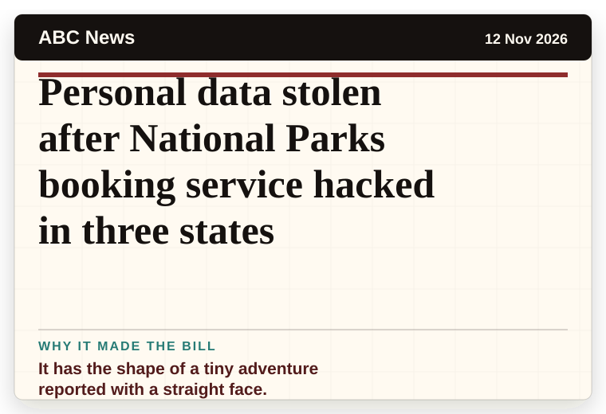
It has the shape of a tiny adventure reported with a straight face.
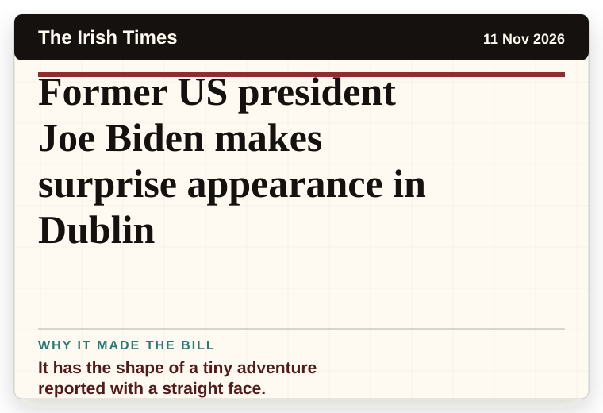
It has the shape of a tiny adventure reported with a straight face.
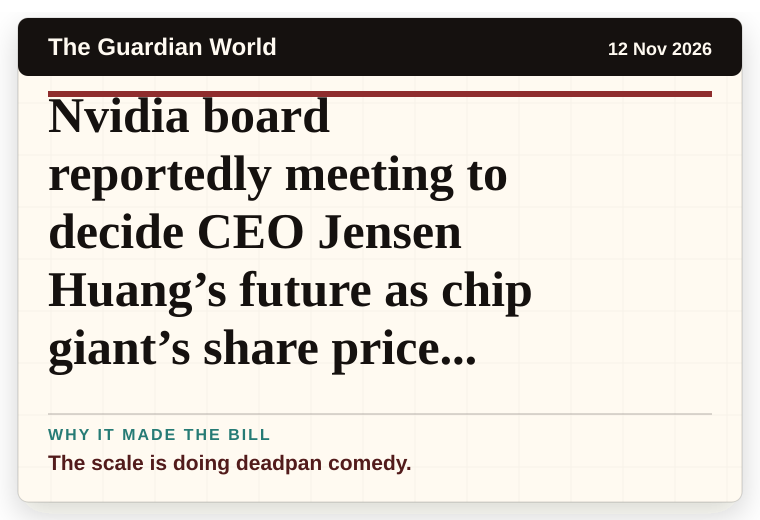
The scale is doing deadpan comedy.